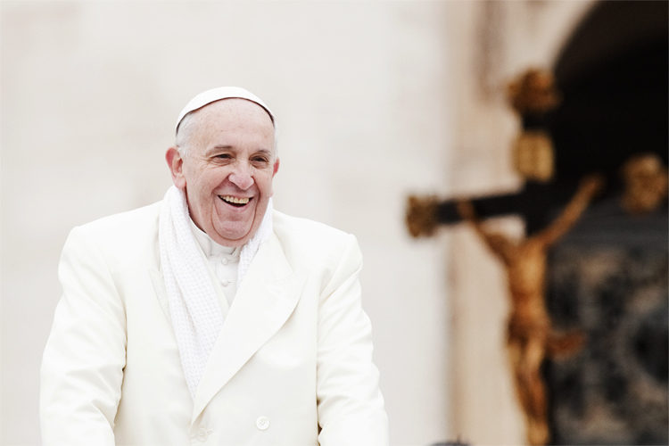

12 MARÇO 2013

Linha do tempo
- 36 – Nasceu em Buenos Aires no dia 17 de dezembro o mais velho dos filhos de José Mario Francisco Bergoglio e Regina María Sivori.
- 1958 – Em março desse ano, ingressou na Companhia de Jesus, congregação fundada no século XVI e liderada por jesuítas.
- 1960 – Bergoglio mudou-se para o Chile para estudar literatura, latim, grego e ciências clássicas.
- 1964 – Deu aulas de literatura e psicologia no Colégio Imaculada Conceição de Santa Fé.
- 1967 – O atual papa começou seus estudos em Teologia no Colégio Máximo de San José, em São Miguel.
- 1969 – Em 13 de dezembro desse ano, Bergoglio foi ordenado sacerdote.
- 1970 – Foi estudar na Universidade de Alcalá de Henares, na Espanha. É a última etapa de sua formação intelectual para o sacerdócio.
- 1973 – Ficou à frente da congregação jesuíta local. Permaneceu como provincial na Argentinha até 1979.
- 1980 – Voltou para a Europa para estudar. Dessa vez, foi à Alemanha concluir seu doutorado em teologia.
- 1986 – Tornou-se reitor da Faculdade de Filosofia e Teologia de San José, em São Miguel, cargo em que permaneceu até 1985.
- 1988 – Foi enviado para Córboda, cidade argentina, pela Companhia de Jesus, como diretor espiritual.
- 1992 – Tornou-se arcebispo titular de Buenos Aires.
- 1998 – Foi nomeado por João Paulo II bispo titular de Auca e bispo-auxiliar da diocese de Buenos Aires.
- 2001 – Bergoglio foi nomeado cardeal por Papa João Paulo II. No mesmo ano, o então papa o nomeou primaz da Argentina.
- 2005 – Foi presidente da Conferência Episcopal da Argentina, posição em que ficou até 2011. No mesmo ano, foi o segundo mais votado no conclave que escolheu o alemão Joseph Ratzinger como novo papa.